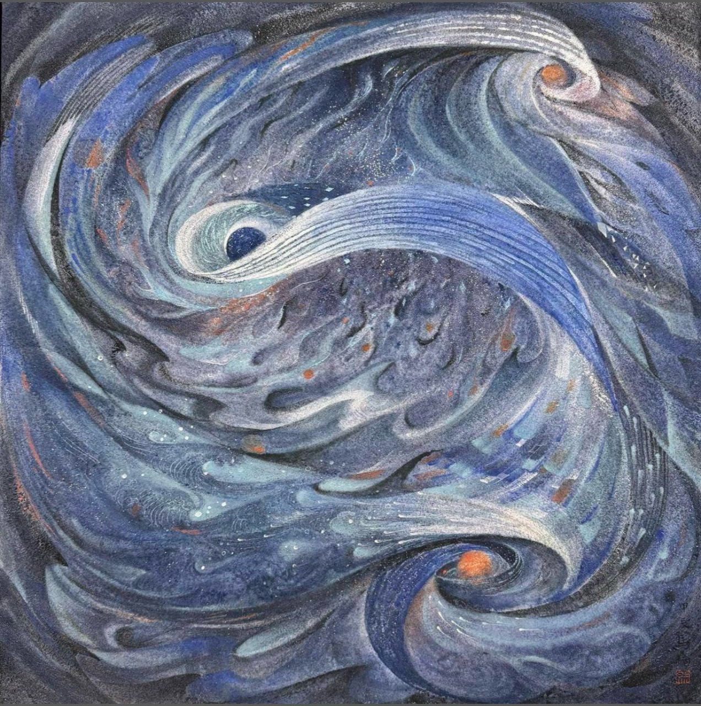
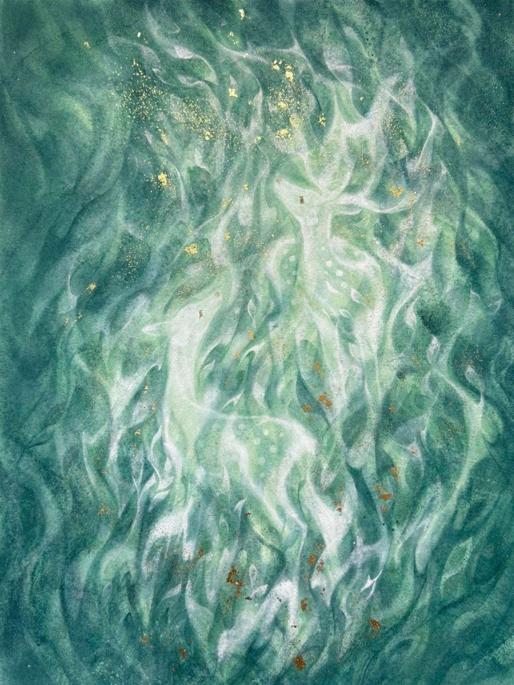
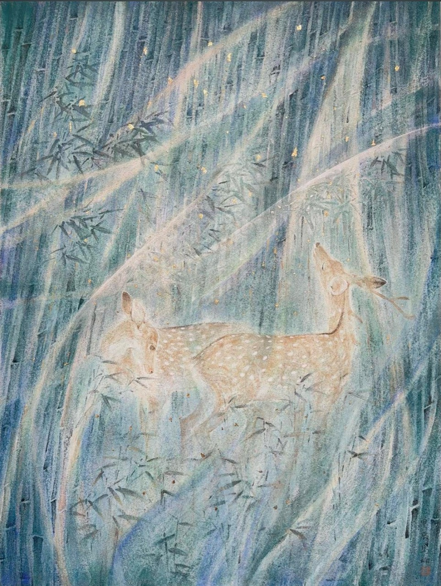
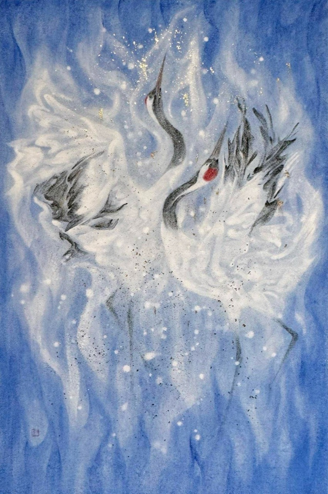
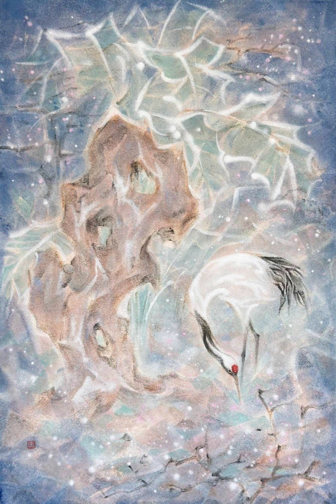
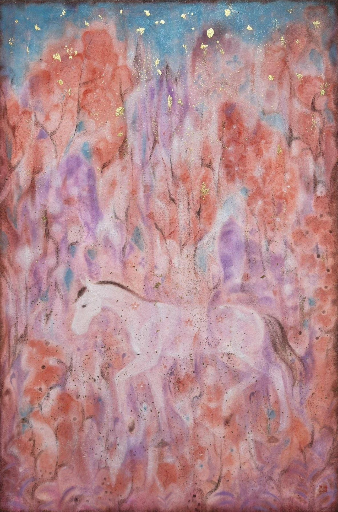
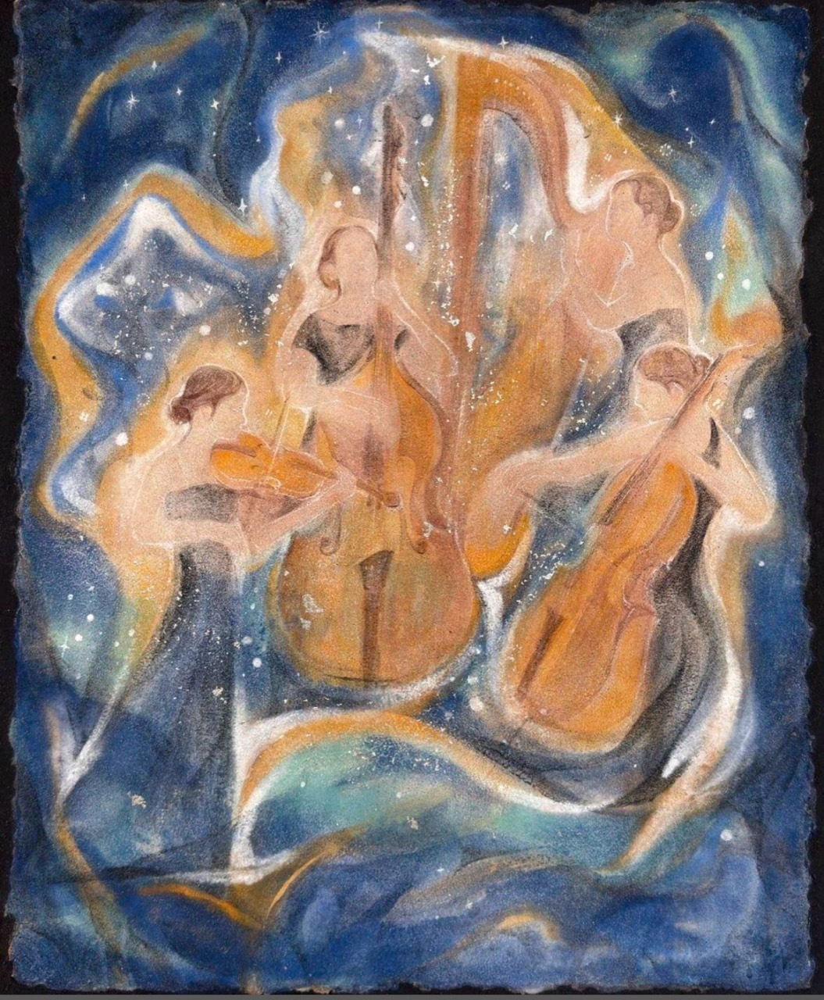

精神花園
謐園、花叢、星夜與山丘，形成可長期觀看的私人秘境。

A2 Academic Blue Chip
以岩彩、礦物顏料與詩意空間，建構一個介於傳統意境、夢境自然與精神場域之間的私人館藏序列。
Artist
她追求的不是岩彩本身，而是畫面的精神。鹿、白鶴、白馬、少女等形象，是情感與精神的象徵，而非單純題材。
Collection Threads
謐園、花叢、星夜與山丘，形成可長期觀看的私人秘境。
從森林夢境到《詩經》君子意象，鹿成為內在情感的載體。
白鶴線索指向舞姿、閒逸、退隱與靈性的精神狀態。
白馬作品連接花園、靈獸、奔赴與自我贈予的詩意。
《天問》打開馬楠作品中少見的形上追問與抽象精神空間。
從紙本岩彩到亞麻布創作，呈現材料與精神語言的演進。
Selected Works
精神花園
馬楠「精神花園 / 私人秘境」主線代表作品，也是此專題收藏的情感核心。

宇宙哲思
以旋渦式結構形成宇宙感與時間感，補足作品集中形上思考的維度。

鹿 / 森林
紙本岩彩成熟代表作品，將鹿、森林、金屬箔與礦物色組成完整精神場域。

鹿 / 詩經
竹林、鹿與君子意象連接古典文本，讓鹿線索有了更清雅的文學根基。

亞麻布轉型
馬楠由紙本岩彩語感轉向亞麻布媒介的重要節點作品。

白鶴
白鶴系列代表作品，雙鶴姿態有舞蹈性，是此收藏中白鶴線索的基準作品。

白鶴 / 仙境
白鶴低首、蓮葉與落花形成清修式詩意場景。

白馬 / 花園
明亮、花園與靈獸意象的代表性補強作品，視覺親和力強。

音樂 / 人物
補足音樂系列與人物線索，呈現夜色、弦樂與流動精神場。
Rabi 評價
馬楠兼具中國美院學術背景、全國美展與國家藝術基金支持。這組收藏的價值，不在於單件價格波動，而在於它已形成一個可研究、可展示、可傳承的專題序列。
她不是在畫岩彩，而是在用岩彩，建構一個屬於自己的精神世界。